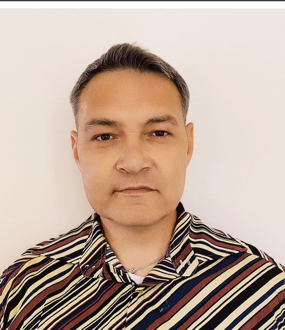

Goal-oriented, detail-driven, and ready for new challenges in IT. Focused on ensuring software quality and continuous professional growth.
Completed 320 hours of QA internship at IDCanopy, a tech company, providing hands-on experience in software testing. I actively combine practical field knowledge with intensive theoretical learning to deliver high-quality results.
Important reminder to myself: Keep studying hard for the ISTQB certification!
Certificate (EN) CV / Lebenslauf
Successfully completed 320 hours of hands-on experience in an Agile environment. Set up and managed testing processes using Scrum and Kanban boards in Jira. Executed comprehensive game and software testing, documented defects with structured reports (including videos, screenshots, and clear actual vs. expected results), and extensively prepared for the ISTQB certification.
Condensed for better readability in the IT sector:
Structured and executed a complete QA workflow within an Agile framework. Set up Scrum and Kanban structures in Jira to track sprint progress and bug lifecycles. Conducted deep Game Testing sessions, capturing high-quality video evidence, screenshots, and creating precise bug reports comparing actual vs. expected behavior.
This very portfolio website – developed using HTML and CSS, and structured to professionally present my software testing skills.
Let's connect! I am open to professional networking and career opportunities.